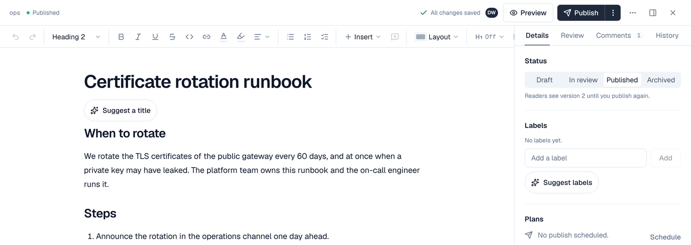
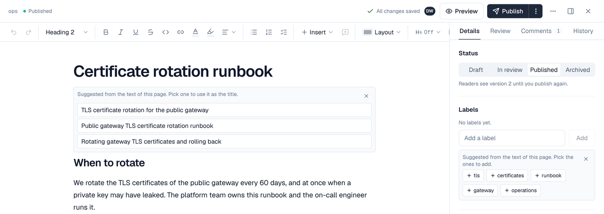
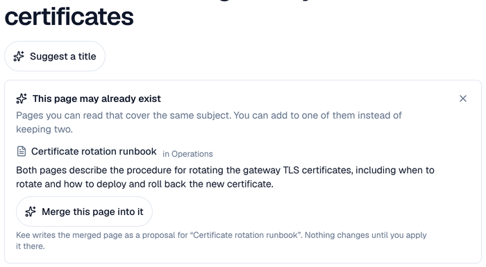
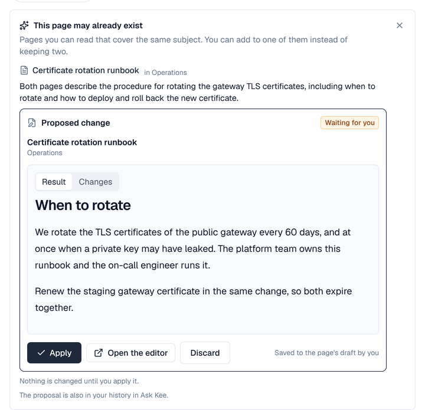
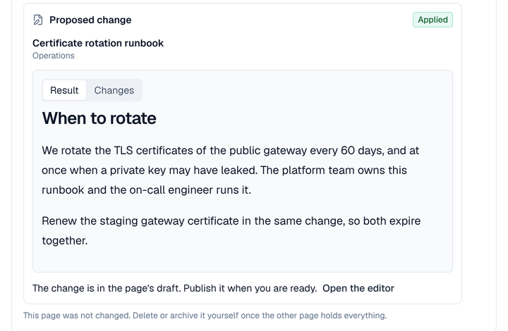

While you edit a page, Kee can suggest a title and labels from its text, and tell you when a new page covers the same subject as a page that already exists. Kee only suggests: nothing changes until you pick a suggestion or apply a merge.
1. Suggest a title
- Open the page and select Edit.
- Under the title, select Suggest a title. Kee reads the page and offers three titles.
- Select one to use it as the title, or close the suggestions with the cross. The title doesn't change until you pick one.

2. Suggest labels
- Open the page and select Edit.
- Open Page details, the side panel of the editor, if it is hidden.
- Under Labels, select Suggest labels. Kee offers up to five labels.
- Select a label to add it to the page. The others stay offered until you close them.

- Suggestions come from the title and the first part of the page's text. Labels the space already uses are preferred.
- Asking again while the text hasn't changed gives the same suggestions at once: nothing is sent and nothing counts against your limit. A new suggestion counts as one request.
- An empty page has nothing to suggest from: write some text first.
- The Title and label suggestions feature is on once Kee is on. An administrator can turn it off.
3. This page may already exist
When you give a new page its title, Kee looks for pages you can read on the same subject. If it finds some, a box under the title says This page may already exist, with up to three pages, each with why Kee thinks so. It never stops you from writing or publishing your page.

- It is shown only for a page that was never published, in the editor, and only when an administrator turned on the Duplicate page warning feature (it is off by default).
- It names only pages you can read: never a page under a page lock, a draft, a whiteboard or blog post, or a page of a space where Kee is off.
- Kee first finds pages with similar words; only when there are some does it ask the model which really cover the same subject. When nothing is similar, nothing is sent and nothing counts.
- Not a duplicate (the cross) closes the box. If the check fails, nothing is shown.
- A page made by Ask Kee or by an outside AI app isn't checked.
4. Merge into the other page
- In the box This page may already exist, read why Kee thinks the pages cover the same subject.
- Select Merge this page into it. Kee writes the other page with both pages' content, as a proposal.
- Read the proposal: Result shows the merged page, Changes what is new. Select Apply to write it into the other page's draft, or Discard.
- Open the other page in the editor, check it and publish it. Then delete or archive your new page yourself.

- Merge this page into it is offered only for a page you may edit.
- Apply writes into the other page's draft as you, with your permissions and page locks, like any proposed change. If the other page changed since Kee read it, Apply says so and writes nothing.
- Your new page is never changed, archived or redirected. After Apply the box says This page was not changed. Delete or archive it yourself once the other page holds everything.
- The merge takes the text of your new page. Its images, mentions and embeds are not carried over; the other page keeps its own.
- The proposal is also kept in your history in Ask Kee, for 7 days.

For administrators: the Title and label suggestions and Duplicate page warning switches are on Settings → Kee → Features and access (Features and permissions).